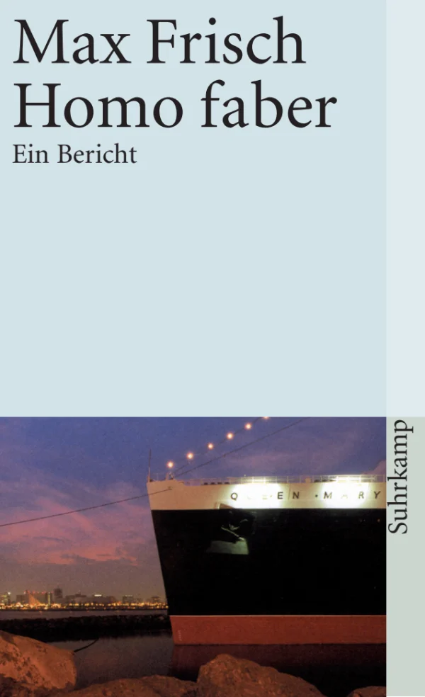
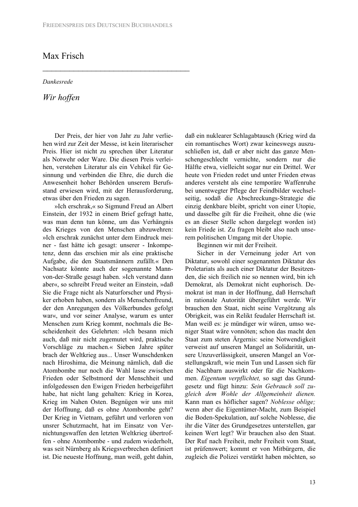

36:24 · 7 OPERE
La democrazia e le proteste a Trieste.
Il filo del discorso
Il relatore prende spunto dalle restrizioni alle manifestazioni a Trieste nell’autunno 2021 per discutere il rapporto fra democrazia, informazione e autonomia personale. L’apertura richiama Kennedy e il confronto pubblico delle idee; segue una lettura polemica della cronaca locale e delle dichiarazioni di amministratori. Una proposta europea di risarcimento e il Codice di Norimberga entrano poi nella discussione sulla vaccinazione: le note distinguono una iniziativa individuale di una eurodeputata dalle posizioni del Parlamento, e le segnalazioni di sospetti eventi avversi dai nessi causali confermati.
Leggi la sintesi completaRiduci la sintesi
Il contributo torna quindi all’educazione del cittadino, al pluralismo e all’indipendenza del giudizio, attraverso un passo del discorso pronunciato da Max Frisch per il premio della pace del 1976. La critica si amplia alla politica tedesca e alla modernità, con paragoni storici che restano attribuiti al relatore. Nel finale, Cristo si è fermato a Eboli offre un diverso esempio di dignità e di rapporto con il mondo, mentre il film di Riefenstahl è richiamato come documento della propaganda nazista. Shakespeare e Platone accompagnano il ritorno al tema del buon governo e della cultura. Le valutazioni sui singoli personaggi e l’idea di una complicità generale degli apparati non sono assunte come accuse accertate.
I libri nel discorso

Costituzione della Repubblica Italiana
Note sul riferimento
Copertina dell’edizione Intra aggiornata al 2023: Intra · 2023 · introduzione di Umberto Vincenti
Copertina autentica del testo integrale, aggiornata alla legge costituzionale 26 settembre 2023 n.1. È successiva al filmato del 2019 e non rappresenta la versione storica letta dal relatore. Umberto Vincenti firma l’introduzione.
Diritti costituzionali di pensiero e manifestazione espliciti; riferimento al testo della Costituzione, soprattutto articoli 17, 21 e 32, senza lettura diretta di un articolo.

Homo faber. Ein Bericht
Note sul riferimento
Copertina: Suhrkamp taschenbuch 354, edizione tascabile dal 1977, 208 pagine; immagine della ristampa del catalogo attuale. Romanzo originale del 1957.
Immagine autentica dell’opera, controllata visivamente; l’edizione di riferimento non è attribuita al filmato.
Homo faber nominato come romanzo di Max Frisch; non è la fonte del passo tratto dal discorso del 1976.

Wir hoffen. Discorso per il Friedenspreis des Deutschen Buchhandels
Note sul riferimento
Prima pagina del discorso: Wir hoffen: Prima pagina del discorso Wir hoffen, pagina 13 del PDF ufficiale della premiazione del 19 settembre 1976; riproduzione digitale integrale della pagina.
Pagina del discorso di Max Frisch, non copertina del volume della premiazione né prima pagina della laudatio di Hartmut von Hentig. Riproduzione integrale della pagina del documento.
Discorso di Frisch per il premio della pace dei librai tedeschi del 1976, con passo sul potere e l’autorità razionale, verificato nella Dankesrede Wir hoffen.

Giulio Cesare
Identificazione probabile
Note sul riferimento
Copertina: Feltrinelli · Universale Economica I Classici · 2013
Copertina autentica dell’edizione di riferimento, non attribuita all’esemplare del video.
Shakespeare esplicito: il giudizio fuggito alle bestie è probabilmente il discorso di Antonio in Giulio Cesare III,2, titolo non pronunciato.

Cristo si è fermato a Eboli
Note sul riferimento
Copertina: Einaudi, Super ET, 2025, introduzione di Nicola Lagioia, 288 pagine; edizione di riferimento successiva al video.
Copertina autentica dell’edizione Einaudi 2025, con introduzione di Nicola Lagioia. È successiva alla discussione del 2021 e non viene attribuita alla copia eventualmente letta dal relatore.
Cristo si è fermato a Eboli di Carlo Levi nominato e raccomandato esplicitamente.

Il trionfo della volontà (Triumph des Willens)
Note sul riferimento
Fotografia archivistica del film: Il trionfo della volontà: Fotografia archivistica della scena di Norimberga, galleria DFF/filmportal, fonte DFM. Non è una copertina libraria né una locandina.
Immagine della scena di Norimberga conservata nella galleria museale del film, con fonte DFM. Usata come documento storico del film di propaganda; non è la copertina di un libro o una locandina.
Leni Riefenstahl e Il trionfo della volontà nominati esplicitamente; normalizzata la grafia deformata nella trascrizione automatica.

La Repubblica
Identificazione probabile
Note sul riferimento
Copertina: Laterza · La Repubblica · edizione con testo a fronte di riferimento
Immagine associata all’ISBN di riferimento e controllata visivamente; edizione e traduzione non identificate come quelle citate o lette nel video.
Platone esplicito, titolo non pronunciato: il governo affidato a chi non lo desidera richiama probabilmente Repubblica I,347c e VII,520d–521b.